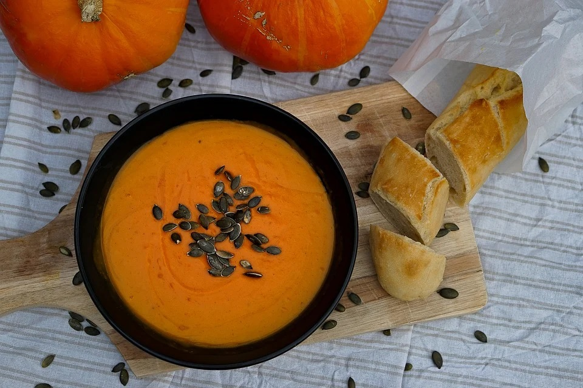
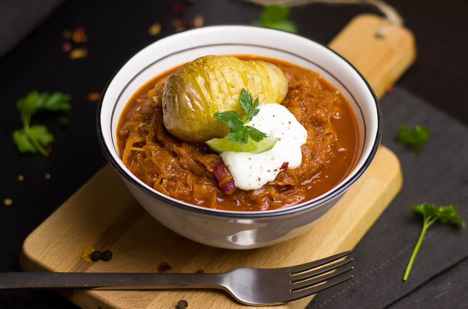
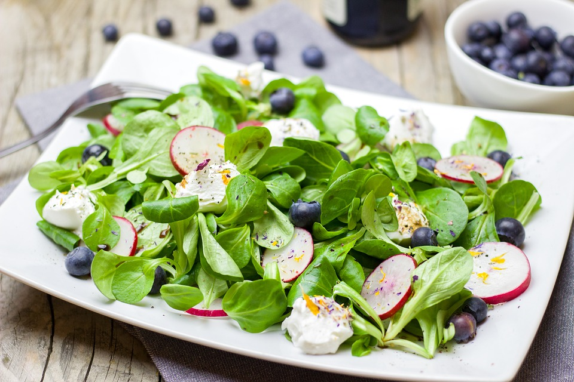
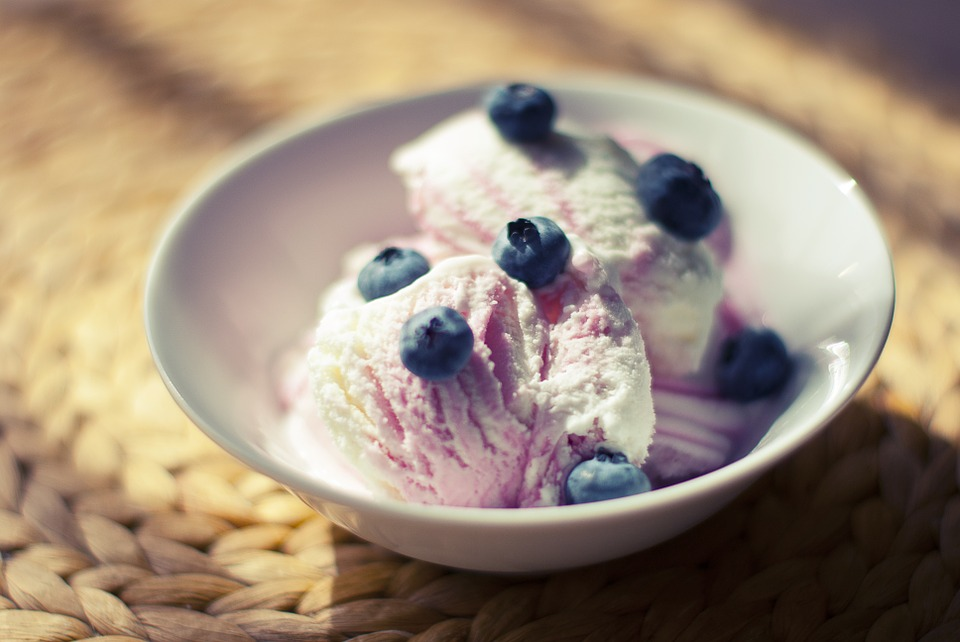

Seasonal Recipes
If you want the right recipe for the right time

Autumn Recipes
Tuck into an autumnal feast of soups, stews, pies and risottos with our seasonal selection of comforting recipes – perfect for when the nights draw in.
Winter Recipes
Keep cosy indoors with our top winter dishes. From comforting one-pots and steaming soups to indulgent puddings and filling salads, you won't even notice the cold.
Spring Recipes
Nothing tastes better than the first few springtime meals. Light, bright, lemony, and packed with peak season produce like peas, asparagus, ramps, and rhubarb; these are our favorite spring recipes to celebrate the season.
Summer Recipes
Summer is the perfect opportunity to make the most of fantastic seasonal produce – ripe tomatoes, peppers, courgettes, new potatoes, peas, berries and more – all at their very best.